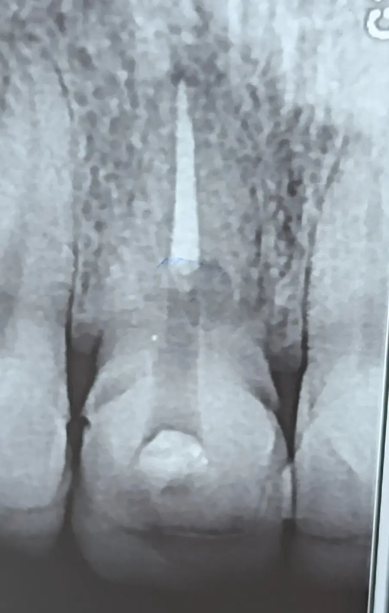

نسخه استخراجشده؛ ترجمه یا تأیید علمی انجام نشده است. وضعیت: captured
بیمار برای بررسی دندان قدامی آمده است. تصمیم قبلی مشخص بود: کشیدن و جایگزینی با ایمپلنت. اما برای بیمار، از دست دادن این دندان یک مسئلهی زیبایی و احساسی مهم است.

در رادیوگرافی، ضایعهای در ناحیهی سرویکال دیده میشد که با الگوی External Cervical Resorption (ECR) همخوانی داشت؛ به سمت پالپ پیش رفته و ساختار ریشه را تضعیف کرده بود. در مراحل پیشرفته این وضعیت اغلب به کشیدن میرسد؛ اما اگر حذف کامل بافت رزورپتیو و ایجاد سیل مناسب امکانپذیر باشد، حفظ دندان هنوز قابل بررسی است. پس بهجای تصمیم فوری برای اکسترکشن، گزینهی حفظ مطرح شد و بیمار برای نظر دوم ارجاع شد.
حذف بافت فعال رزورپتیو شرط توقف بیماری است و MTA میتواند سیل بیولوژیک قابل اعتمادی بسازد و به ترمیم بافت سخت کمک کند. ایمپلنت درمانی قابل پیشبینی است؛ اما در صورت امکان، حفظ دندان طبیعی ارزش بیولوژیک و روانی بالایی دارد. گاهی تصمیم درست، دادن یک شانس آگاهانه برای حفظ دندان است.
دندان ۶ اولین دندان دائمی است؛ اگر آسیب ببیند، کل اکلوژن و رشد فک را تحت تأثیر قرار میدهد. پس تصمیم برای روکش آن باید دقیق باشد.
بهترین زمان روکش دائمی معمولاً ۱۲ تا ۱۸ سالگی است، وقتی رویش دندانها و لثه پایدارتر شده. اگر تخریب وسیع است، دندان MIH یا اندوشده است، یا فشار اکلوزالی زیاد است، بهترین تصمیم برای دندان ۶ روکش است.